Chapter 5. Model Comparison#
import os
import warnings
import arviz as az
import matplotlib.pyplot as plt
import pandas as pd
import jax.numpy as jnp
from jax import random, local_device_count, lax
from jax.scipy import special
import numpyro
import numpyro.distributions as dist
from numpyro.infer import MCMC, NUTS, Predictive
seed=1234
if "SVG" in os.environ:
%config InlineBackend.figure_formats = ["svg"]
warnings.formatwarning = lambda message, category, *args, **kwargs: "{}: {}\n".format(
category.__name__, message
)
az.style.use("arviz-darkgrid")
numpyro.set_platform("cpu") # or "gpu", "tpu" depending on system
numpyro.set_host_device_count(local_device_count())
/home/runner/work/bap-numpyro/bap-numpyro/.venv/lib/python3.13/site-packages/tqdm/auto.py:21: TqdmWarning: IProgress not found. Please update jupyter and ipywidgets. See https://ipywidgets.readthedocs.io/en/stable/user_install.html
from .autonotebook import tqdm as notebook_tqdm
# import pymc3 as pm
# import numpy as np
# import scipy.stats as stats
# import matplotlib.pyplot as plt
# import arviz as az
# az.style.use('arviz-darkgrid')
dummy_data = pd.read_csv('../data/dummy.csv', delimiter=' ', header=None, dtype=float)
x_1 = jnp.asarray(dummy_data)[:, 0]
y_1 = jnp.asarray(dummy_data)[:, 1]
order = 2
x_1p = jnp.vstack([x_1**i for i in range(1, order+1)])
x_1s = (x_1p - x_1p.mean(axis=1, keepdims=True)) / x_1p.std(axis=1, keepdims=True)
y_1s = (y_1 - y_1.mean()) / y_1.std()
plt.scatter(x_1s[0], y_1s)
plt.xlabel('x')
plt.ylabel('y')
Text(0, 0.5, 'y')
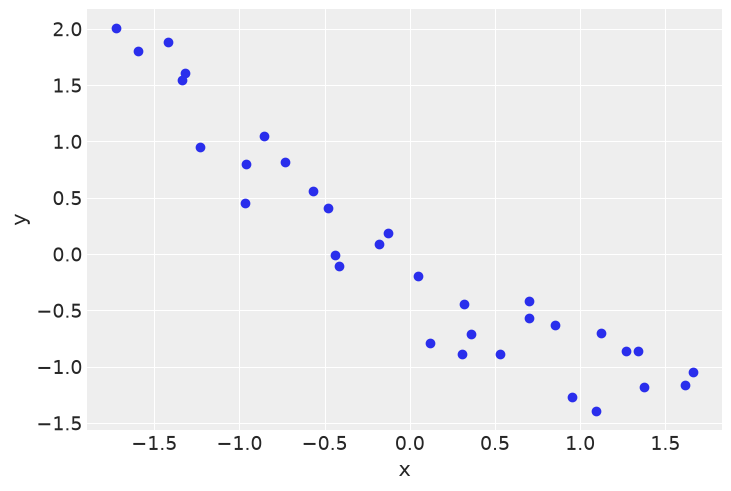
def model_l(obs=None):
α = numpyro.sample('α', dist.Normal(loc=0, scale=1))
β = numpyro.sample('β', dist.Normal(loc=0, scale=10))
ϵ = numpyro.sample('ϵ', dist.HalfNormal(scale=5))
μ = α + β * x_1s[0]
y_pred = numpyro.sample('y_pred', dist.Normal(loc=μ, scale=ϵ), obs=obs)
kernel = NUTS(model_l)
mcmc_l = MCMC(kernel, num_warmup=500, num_samples=2000, num_chains=2, chain_method='sequential')
mcmc_l.run(random.PRNGKey(seed), obs=y_1s)
def model_p(obs=None):
α = numpyro.sample('α', dist.Normal(loc=0, scale=1))
β = numpyro.sample('β', dist.Normal(loc=0, scale=10), sample_shape=(order,))
ϵ = numpyro.sample('ϵ', dist.HalfNormal(scale=5))
μ = α + jnp.dot(β, x_1s)
y_pred = numpyro.sample('y_pred', dist.Normal(loc=μ, scale=ϵ), obs=obs)
kernel = NUTS(model_p)
mcmc_p = MCMC(kernel, num_warmup=500, num_samples=2000, num_chains=2, chain_method='sequential')
mcmc_p.run(random.PRNGKey(seed), obs=y_1s)
x_new = jnp.linspace(x_1s[0].min(), x_1s[0].max(), 100)
α_l_post = mcmc_l.get_samples()['α'].mean()
β_l_post = mcmc_l.get_samples()['β'].mean(axis=0)
y_l_post = α_l_post + β_l_post * x_new
plt.plot(x_new, y_l_post, 'C1', label='linear model')
α_p_post = mcmc_p.get_samples()['α'].mean()
β_p_post = mcmc_p.get_samples()['β'].mean(axis=0)
idx = jnp.argsort(x_1s[0])
y_p_post = α_p_post + jnp.dot(β_p_post, x_1s)
plt.plot(x_1s[0][idx], y_p_post[idx], 'C2', label=f'model order {order}')
#α_p_post = trace_p['α'].mean()
#β_p_post = trace_p['β'].mean(axis=0)
#x_new_p = np.vstack([x_new**i for i in range(1, order+1)])
#y_p_post = α_p_post + np.dot(β_p_post, x_new_p)
plt.scatter(x_1s[0], y_1s, c='C0', marker='.')
plt.legend()
<matplotlib.legend.Legend at 0x7f7ca01d2a50>
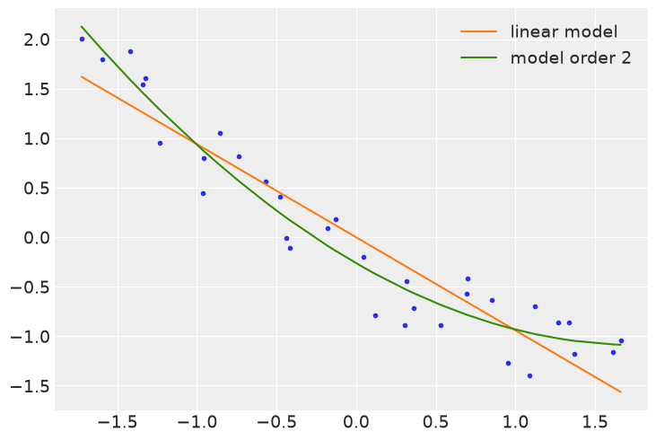
Posterior predictive checks#
prior = Predictive(mcmc_l.sampler.model, num_samples=10)
prior_p = prior(random.PRNGKey(seed), obs=y_1s)
pred = Predictive(model=mcmc_l.sampler.model, posterior_samples=mcmc_l.get_samples(), return_sites=['y_pred'])
post_p = pred(random.PRNGKey(seed))
y_l = post_p['y_pred']
samples = az.from_numpyro(mcmc_l, posterior_predictive=post_p)
az.plot_ppc(samples, mean=True, observed=True, color='C0', alpha=0.01)
FutureWarning: color has been deprecated in favor of colors
<Axes: xlabel='y_pred'>
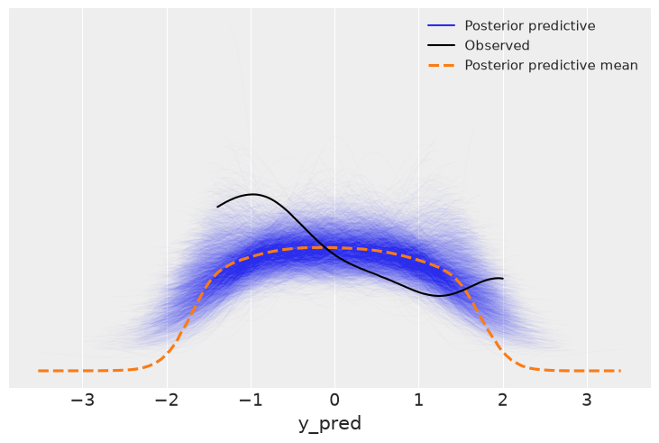
prior = Predictive(mcmc_p.sampler.model, num_samples=10)
prior_p = prior(random.PRNGKey(seed), obs=y_1s)
pred = Predictive(model=mcmc_p.sampler.model, posterior_samples=mcmc_p.get_samples(), return_sites=['y_pred'])
post_p = pred(random.PRNGKey(seed))
y_p = post_p['y_pred']
samples = az.from_numpyro(mcmc_p, posterior_predictive=post_p)
az.plot_ppc(samples, mean=True, observed=True, color='C0', alpha=0.01)
<Axes: xlabel='y_pred'>
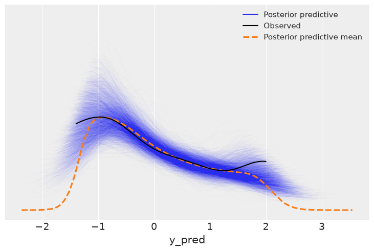
plt.figure(figsize=(8, 3))
data = [y_1s, y_l, y_p]
labels = ['data', 'linear model', 'order 2']
for i, d in enumerate(data):
mean = d.mean()
err = jnp.percentile(d, jnp.array([25, 75]))
plt.errorbar(mean, -i, xerr=[[-err[0]], [err[1]]], fmt='o')
plt.text(mean, -i+0.2, labels[i], ha='center', fontsize=14)
plt.ylim([-i-0.5, 0.5])
plt.yticks([])
([], [])
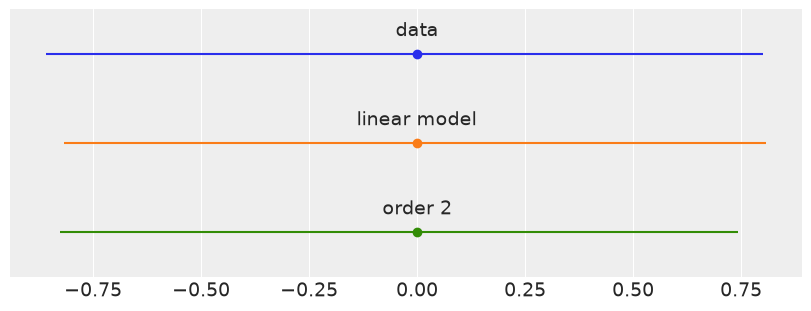
fig, ax = plt.subplots(1, 2, figsize=(10, 3), constrained_layout=True)
def iqr(x, a=0):
return jnp.subtract(*jnp.percentile(x, jnp.array([75, 25]), axis=a))
for idx, func in enumerate([jnp.mean, iqr]):
T_obs = func(y_1s)
ax[idx].axvline(T_obs, 0, 1, color='k', ls='--')
for d_sim, c in zip([y_l, y_p], ['C1', 'C2']):
T_sim = func(d_sim, 1)
p_value = jnp.mean(T_sim >= T_obs)
az.plot_kde(T_sim, plot_kwargs={'color': c}, label=f'p-value {p_value:.2f}', ax=ax[idx])
ax[idx].set_title(func.__name__)
ax[idx].set_yticks([])
ax[idx].legend()
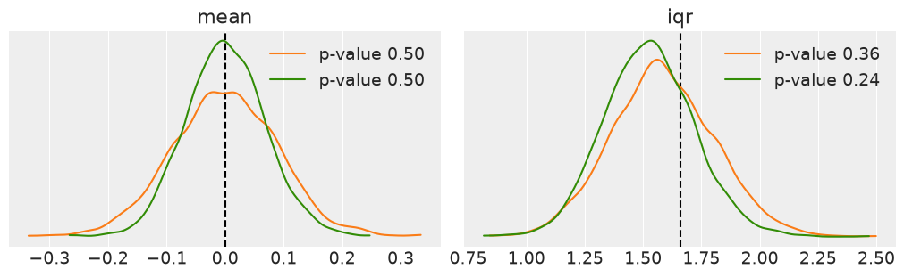
Occam’s razor – simplicity and accuracy#
x = jnp.array([4., 5., 6., 9., 12, 14.])
y = jnp.array([4.2, 6., 6., 9., 10, 10.])
plt.figure(figsize=(10, 5))
orders = [0, 1, 2, 5]
plt.plot(x, y, 'o')
for i in orders:
x_n = jnp.linspace(x.min(), x.max(), 100)
coeffs = jnp.polyfit(x, y, deg=i)
ffit = jnp.polyval(coeffs, x_n)
# p = onp.poly1d(coeffs)
yhat = jnp.polyval(coeffs, x)
# yhat = p(x)
ybar = jnp.mean(y)
ssreg = jnp.sum((yhat-ybar)**2)
sstot = jnp.sum((y - ybar)**2)
r2 = ssreg / sstot
plt.plot(x_n, ffit, label=f'order {i}, $R^2$= {r2:.2f}')
plt.legend(loc=2)
plt.xlabel('x')
plt.ylabel('y', rotation=0)
# plt.savefig('B11197_05_05.png', dpi=300)
plt.plot([10, 7], [9, 7], 'ks')
# plt.savefig('B11197_05_06.png', dpi=300)
[<matplotlib.lines.Line2D at 0x7f7c36936ad0>]
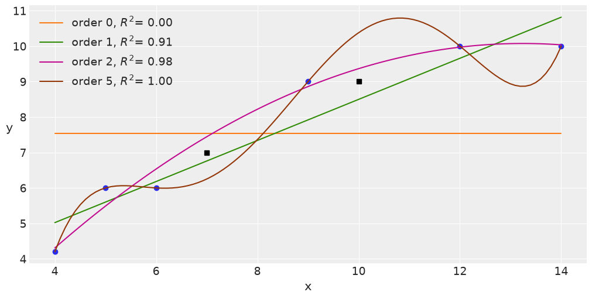
Computing information criteria with PyMC3#
waic_l = az.waic(mcmc_l)
waic_l
Computed from 4000 posterior samples and 33 observations log-likelihood matrix.
Estimate SE
elpd_waic -14.25 2.65
p_waic 2.35 -
cmp_df = az.compare({'model_l':mcmc_l, 'model_p':mcmc_p},
method='BB-pseudo-BMA')
cmp_df
| rank | elpd_loo | p_loo | elpd_diff | weight | se | dse | warning | scale | |
|---|---|---|---|---|---|---|---|---|---|
| model_p | 0 | -4.599350 | 2.672065 | 0.000000 | 0.997633 | 2.343905 | 0.000000 | False | log |
| model_l | 1 | -14.277432 | 2.373697 | 9.678082 | 0.002367 | 2.649920 | 2.650817 | False | log |
az.plot_compare(cmp_df)
<Axes: title={'center': 'Model comparison\nhigher is better'}, xlabel='elpd_loo (log)', ylabel='ranked models'>
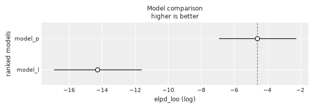
Model Averaging#
w = 0.5
key = random.PRNGKey(seed)
k_l, k_p, k_mix = random.split(key, 3)
pred_l = Predictive(model_l, posterior_samples=mcmc_l.get_samples(), return_sites=['y_pred'])
ppc_l = pred_l(k_l)['y_pred']
pred_p = Predictive(model_p, posterior_samples=mcmc_p.get_samples(), return_sites=['y_pred'])
ppc_p = pred_p(k_p)['y_pred']
# Bernoulli mixing: for each draw, pick from model_l or model_p with probability w
n = min(ppc_l.shape[0], ppc_p.shape[0])
take_l = dist.Bernoulli(probs=w).sample(k_mix, (n,)).astype(bool)
y_lp = jnp.where(take_l[:, None], ppc_l[:n], ppc_p[:n])
_, ax = plt.subplots(figsize=(10, 6))
az.plot_kde(y_l, plot_kwargs={'color': 'C1'}, label='linear model', ax=ax)
az.plot_kde(y_p, plot_kwargs={'color': 'C2'}, label='order 2 model', ax=ax)
az.plot_kde(y_lp.reshape(-1), plot_kwargs={'color': 'C3'}, label='weighted model', ax=ax)
plt.plot(y_1s, jnp.zeros_like(y_1s), '|', label='observed data')
plt.yticks([])
plt.legend()
<matplotlib.legend.Legend at 0x7f7c33f0fd90>
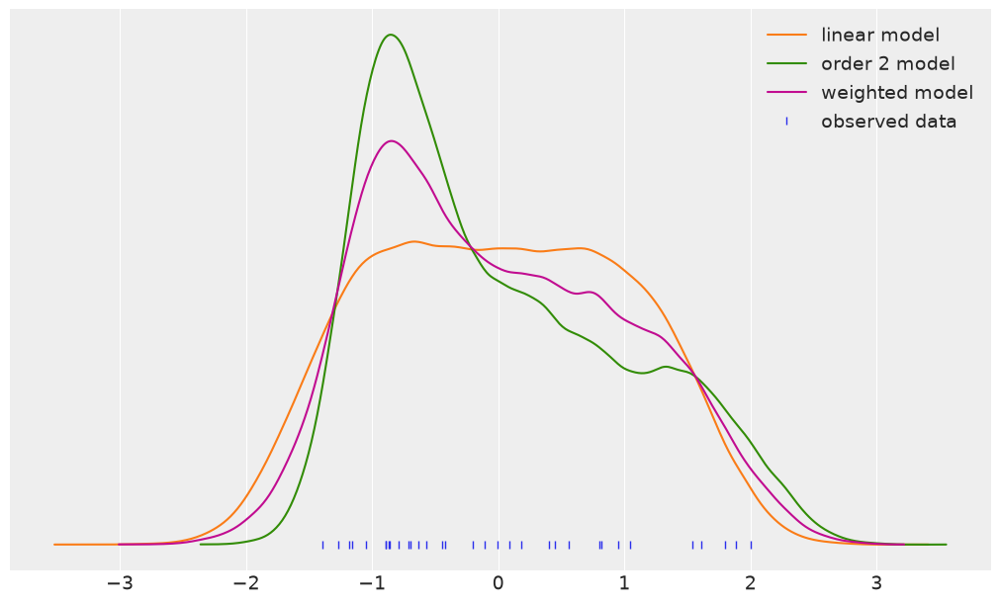
Bayes factors#
coins = 30 # 300
heads = 9 # 90
y_d = jnp.repeat(jnp.array([0, 1]), jnp.array([coins-heads, heads]))
p = jnp.array([0.5, 0.5])
print(p)
model_index = dist.Categorical(probs=p).sample(key=random.PRNGKey(2), sample_shape=(10,))
m_0 = (4, 8)
m_1 = (8, 4)
checkeq = lax.eq(model_index, 0)
checkeq.astype(int)
print(checkeq.astype(int))
# m = lax.switch(checkeq, m_0, m_1)
[0.5 0.5]
[0 0 1 0 1 1 0 1 0 0]
# def model(obs=None):
# p = jnp.array([0.5, 0.5])
# model_index = numpyro.sample('model_index', dist.Categorical(probs=p))
# m_0 = (4, 8)
# m_1 = (8, 4)
# checkeq = lax.eq(model_index, 0).astype(int)
# m = lax.switch(checkeq, m_0, m_1)
# # m = pm.math.switch(pm.math.eq(model_index, 0), m_0, m_1)
# # a priori
# θ = numpyro.sample('θ', dist.Beta(concentration1=m[0], concentration0=m[1]))
# # likelihood
# y = numpyro.sample('y', dist.Bernoulli(probs=θ), obs=obs)
# kernel = NUTS(model)
# mcmc_BF = MCMC(kernel, num_warmup=500, num_samples=2000, num_chains=2, chain_method='sequential')
# mcmc_BF.run(random.PRNGKey(seed), obs=y_d)
# az.plot_trace(mcmc_BF)
# with pm.Model() as model_BF:
# p = np.array([0.5, 0.5])
# model_index = pm.Categorical('model_index', p=p)
# m_0 = (4, 8)
# m_1 = (8, 4)
# m = pm.math.switch(pm.math.eq(model_index, 0), m_0, m_1)
# # a priori
# θ = pm.Beta('θ', m[0], m[1])
# # likelihood
# y = pm.Bernoulli('y', θ, observed=y_d)
# trace_BF = pm.sample(5000)
# az.plot_trace(trace_BF)
# plt.savefig('B11197_05_11.png', dpi=300)
# pM1 = mcmc_BF.get_samples()['model_index'].mean()
# pM0 = 1 - pM1
# BF = (pM0 / pM1) * (p[1] / p[0])
# BF
def model_BF_0(obs=None):
θ = numpyro.sample('θ', dist.Beta(concentration1=4, concentration0=8))
y = numpyro.sample('y', dist.Bernoulli(probs=θ), obs=obs)
kernel = NUTS(model_BF_0)
mcmc_BF_0 = MCMC(kernel, num_warmup=500, num_samples=2000, num_chains=2, chain_method='sequential')
mcmc_BF_0.run(random.PRNGKey(seed), obs=y_d)
def model_BF_1(obs=None):
θ = numpyro.sample('θ', dist.Beta(concentration1=8, concentration0=4))
y = numpyro.sample('y', dist.Bernoulli(probs=θ), obs=obs)
kernel = NUTS(model_BF_1)
mcmc_BF_1 = MCMC(kernel, num_warmup=500, num_samples=2000, num_chains=2, chain_method='sequential')
mcmc_BF_1.run(random.PRNGKey(seed), obs=y_d)
# https://forum.pyro.ai/t/mcmc-and-marginal-likelihood/2025
# model_BF_0.marginal_likelihood / model_BF_1.marginal_likelihood
Bayes factors and information criteria#
traces = []
waics = []
for coins, heads in [(30, 9), (300, 90)]:
y_d = jnp.repeat(jnp.array([0, 1]), jnp.array([coins-heads, heads]))
for priors in [(4, 8), (8, 4)]:
def model(obs=None): # with pm.Model() as model:
θ = numpyro.sample('θ', dist.Beta(*priors))
y = numpyro.sample('y', dist.Bernoulli(probs=θ), obs=obs)
# trace = pm.sample(2000)
kernel = NUTS(model)
trace = MCMC(kernel, num_warmup=500, num_samples=2000, num_chains=2, chain_method='sequential')
trace.run(random.PRNGKey(seed), obs=y_d)
traces.append(trace)
waics.append(az.waic(trace))
traces
[<numpyro.infer.mcmc.MCMC at 0x7f7c330e05a0>,
<numpyro.infer.mcmc.MCMC at 0x7f7c32a44f30>,
<numpyro.infer.mcmc.MCMC at 0x7f7c32349050>,
<numpyro.infer.mcmc.MCMC at 0x7f7c31b8ac50>]
model_names = ['Model_0 (30-9)', 'Model_1 (30-9)',
'Model_0 (300-90)', 'Model_1 (300-90)']
az.plot_forest(traces, model_names=model_names)
array([<Axes: title={'center': '94.0% HDI'}>], dtype=object)
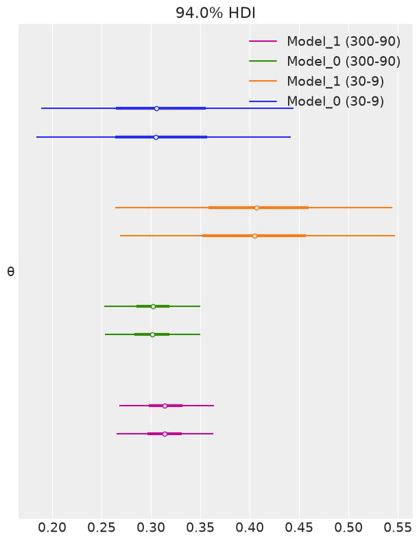
waics
[Computed from 4000 posterior samples and 30 observations log-likelihood matrix.
Estimate SE
elpd_waic -19.05 2.10
p_waic 0.72 -,
Computed from 4000 posterior samples and 30 observations log-likelihood matrix.
Estimate SE
elpd_waic -19.76 1.00
p_waic 0.70 -,
Computed from 4000 posterior samples and 300 observations log-likelihood matrix.
Estimate SE
elpd_waic -184.24 6.71
p_waic 0.98 -,
Computed from 4000 posterior samples and 300 observations log-likelihood matrix.
Estimate SE
elpd_waic -184.34 6.23
p_waic 0.93 -]
fig, ax = plt.subplots(1, 2, sharey=True)
labels = model_names
indices = [0, 0, 1, 1]
for i, (ind, d) in enumerate(zip(indices, waics)):
mean = d.elpd_waic
ax[ind].errorbar(mean, -i, xerr=d.se, fmt='o')
ax[ind].text(mean, -i+0.2, labels[i], ha='center')
# ax[0].set_xlim(30, 50)
# ax[1].set_xlim(330, 400)
# plt.ylim([-i-0.5, 0.5])
# plt.yticks([])
# plt.subplots_adjust(wspace=0.05)
# fig.text(0.5, 0, 'Deviance', ha='center', fontsize=14)
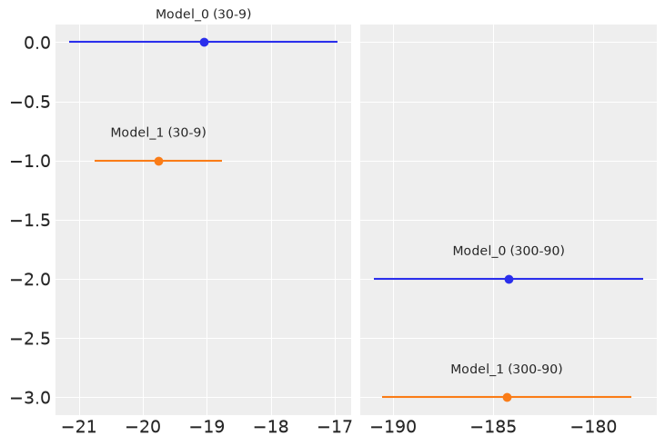
Regularizing priors#
plt.figure(figsize=(8, 6))
x_values = jnp.linspace(-10, 10, 1000)
for df in [1, 2, 5, 15]:
# distri = stats.laplace(scale=df)
distri = dist.Laplace(scale=df)
x_pdf = jnp.exp(distri.log_prob(x_values))
plt.plot(x_values, x_pdf, label=f'b = {df}')
x_pdf = jnp.exp(dist.Normal().log_prob(x_values))
#stats.norm.pdf(x_values)
plt.plot(x_values, x_pdf, label='Gaussian')
plt.xlabel('x')
plt.yticks([])
plt.legend()
plt.xlim(-7, 7)
(-7.0, 7.0)
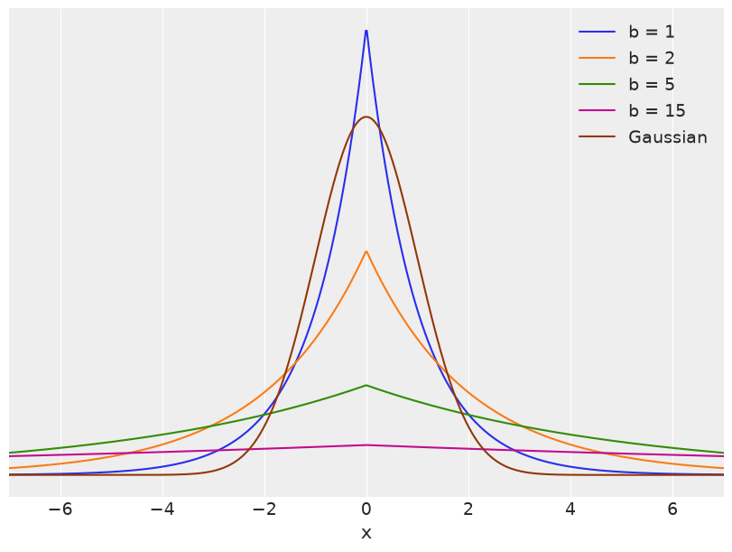
# x = range(0, 10)
x = jnp.arange(0, 10)
q = dist.Binomial(total_count=10, probs=0.75)
# r = random.randint(key=random.PRNGKey(0), shape=x, minval=0, maxval=10,)
r = dist.Uniform(low=0, high=10)
# data = stats.bernoulli.rvs(p=theta_real, size=trials)
# data = dist.Bernoulli(probs=theta_real).sample(random.PRNGKey(1), (trials,))
true_distribution = [list(q.sample(random.PRNGKey(i), (200,))).count(i) / 200 for i in x]
q_pmf = jnp.exp(q.log_prob(x))
r_pmf = jnp.exp(r.log_prob(x))
_, ax = plt.subplots(1, 3, figsize=(12, 4), sharey=True,
constrained_layout=True)
for idx, (dist, label) in enumerate(zip([true_distribution, q_pmf, r_pmf], ['true_distribution', 'q', 'r'])):
h = -jnp.sum(jnp.array(dist) * jnp.log(jnp.array(dist))) # Entropy
ax[idx].vlines(x, 0, dist, label=f'entropy = {h:.2f}')
ax[idx].set_title(label)
ax[idx].set_xticks(x)
ax[idx].legend(loc=2, handlelength=0)
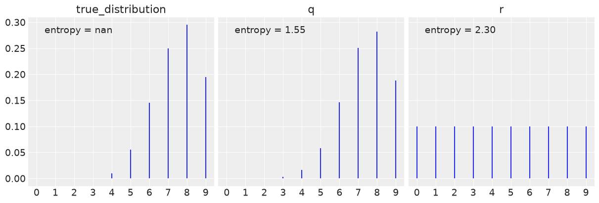
# import numpy as np
# np.random.seed(912)
# x = range(0, 10)
# q = scipy.stats.binom(10, 0.75)
# r = scipy.stats.randint(0, 10)
# true_distribution = [list(q.rvs(200)).count(i) / 200 for i in x]
# q_pmf = q.pmf(x)
# r_pmf = r.pmf(x)
# _, ax = plt.subplots(1, 3, figsize=(12, 4), sharey=True,
# constrained_layout=True)
# for idx, (distri, label) in enumerate(zip([true_distribution, q_pmf, r_pmf], ['true_distribution', 'q', 'r'])):
# ax[idx].vlines(x, 0, dist, label=f'entropy = {scipy.stats.entropy(dist):.2f}')
# print("X", dist)
# print("XX", type(dist))
# ax[idx].set_title(label)
# ax[idx].set_xticks(x)
# ax[idx].legend(loc=2, handlelength=0)
# plt.savefig('B11197_05_15.png', dpi=300)
# If qk is not None, then compute the Kullback-Leibler divergence S = sum(pk * log(pk / qk), axis=axis).
# H = -jnp.sum(jnp.array(dist) * jnp.log(jnp.array(dist))) # Entropy
def KLD(pk, qk, base=None, axis=0):
if base is not None and base <= 0:
raise ValueError("`base` must be a positive number or `None`.")
pk = jnp.asarray(pk)
pk = 1.0*pk / jnp.sum(pk, axis=axis, keepdims=True)
if qk is None:
vec = special.entr(pk)
else:
qk = jnp.asarray(qk)
pk, qk = jnp.broadcast_arrays(pk, qk)
qk = 1.0*qk / jnp.sum(qk, axis=axis, keepdims=True)
vec = special.rel_entr(pk, qk)
S = jnp.sum(vec, axis=axis)
if base is not None:
S /= jnp.log(base)
return S
KLD(q_pmf, r_pmf)
Array(0.7154907, dtype=float32)
import scipy
scipy.stats.entropy(true_distribution, q_pmf), scipy.stats.entropy(true_distribution, r_pmf)
(np.float64(0.00571409093487765), np.float64(0.7632951528988788))
scipy.stats.entropy(r_pmf, q_pmf), scipy.stats.entropy(q_pmf, r_pmf)
(np.float32(2.7569296), np.float32(0.7154906))